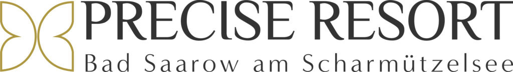
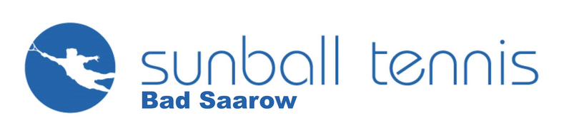
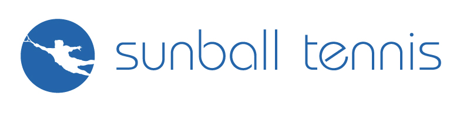
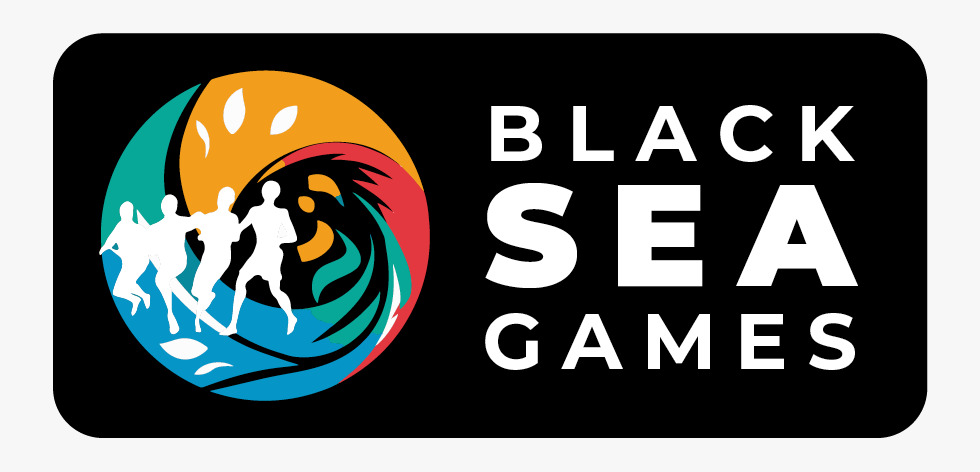
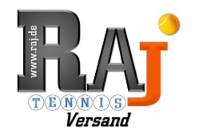

Unsere Partner.
Menschen, Marken und Veranstalter, mit denen tennis-schiri.de zusammenarbeitet – ergänzt um TENNILO als eigenes digitales Tennisprojekt.
Gemeinsam für den Tennissport.

Precise Resort Bad Saarow
Resort direkt am Scharmützelsee mit Wellness, Golf und Tennisangeboten – für Sport und Erholung.
Partnerwebsite besuchen ↗
Sunball Tenniscenter Bad Saarow
Tennisanlage am Scharmützelsee mit Plätzen zum freien Spielen und professionellem Training.
Partnerwebsite besuchen ↗
Sunball Tennis
Tennisreisen, Camps und Tennistraining an ausgewählten Urlaubszielen – vom Einsteiger bis zum ambitionierten Spieler.
Partnerwebsite besuchen ↗
BLACK SEA GAMES
Sport- und Urlaubsveranstaltung in Bulgarien, bei der Tennis und weitere Sportarten zusammenkommen.
Partnerwebsite besuchen ↗Junior World Tennis Series (JWTS)
Internationale Jugend-Turnierserie, die jungen Tennistalenten Spielpraxis und Turniererlebnisse bietet.
Partnerwebsite besuchen ↗
RAJ Tennisversand
Online-Fachhandel für Tenniszubehör und Ausrüstung – vom Tennisball bis zum Trainingsbedarf.
Partnerwebsite besuchen ↗myscore.live
Digitales Live-Scoring für Tennis und Padel: Spielstände werden für Veranstalter und Zuschauer online sichtbar.
Partnerwebsite besuchen ↗TENNILO
Digitale Lösungen rund um Tennis – darunter TENNILO Score und TENNILO Tournament in Entwicklung.
TENNILO entdecken ↗